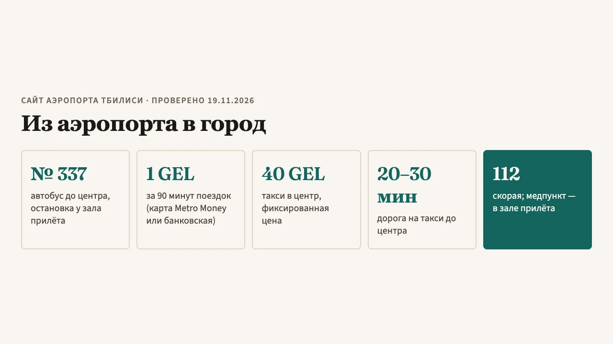
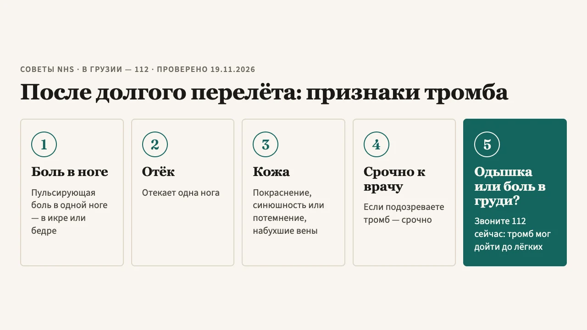

- Автобус до центра
- № 337
- Проезд
- 1 GEL за 90 минут
- Такси в центр
- 40 GEL
- В пути на такси
- 20–30 минут
- Скорая
- 112
Статья входит в справочник о медицине в Грузии. Коротко о главном: полис держите под рукой ещё до очереди на границе, в город поезжайте днём на № 337, в любое время суток — с официальной стоянки у выхода по фиксированной цене. При боли в груди после перелёта сразу звоните 112.
Прилёт: что есть в зале аэропорта Тбилиси
На первый час в Грузии в терминале есть всё нужное: медпункт с врачами, аптека, банки и обмен валюты, Wi-Fi и справочная. Полный список — на странице услуг официального сайта.
Медпункт в зале прилёта
Медпункт находится в середине зала прилёта и вылета. По данным официального сайта, квалифицированные врачи дежурят там круглые сутки. Телефон — +995 32 310 467. Закружилась голова, ушиблись, стало плохо на борту — это ближайшая помощь. Если человеку трудно дышать или болит в груди, сразу звоните 112.
Аптека GPC
Сайт пишет, что в ней большой выбор рецептурных и безрецептурных лекарств. Где именно она стоит и когда открыта, на странице не сказано.
Наш совет. Свои постоянные лекарства везите в ручной клади, с запасом на несколько дней. Привычной марки на месте может не оказаться.
Обмен валюты
Банки и пункты обмена есть прямо в терминале, так что обменять немного наличных на лари можно сразу после прилёта.
Наш совет. Перед вылетом проверьте, что банковская карта работает за границей: ею можно заплатить и за проезд в № 337.
Wi-Fi. Сеть есть по всему терминалу. Пригодится, чтобы написать хозяину жилья, скачать полис из почты и сохранить адрес, куда едете.
Справочная и потерянный багаж. Обе службы есть в списке услуг, бюро утерянного багажа — рядом с лентами выдачи в зале прилёта.
Наш совет. Чемодан не приехал — до выхода из зала идите в это бюро с багажной биркой и посадочным талоном.
Табло прилёта. Время рейса узнавайте на официальном сайте, в разделе Flights — Arrivals.
Паспортный контроль и полис на границе
Полис нужен каждому иностранцу, поэтому достаньте его ещё до очереди. GOV.UK — сайт правительства Великобритании — пишет: у всех гостей Грузии должен быть полис здоровья и от несчастного случая на всё время поездки.
Кто может спросить полис
По данным GOV.UK, подтверждение может попросить авиакомпания при регистрации на рейс или пограничники при прибытии в Грузию. Без него, предупреждает тот же сайт, могут быть трудности. Какие именно, там не сказано, и мы не гадаем.
Что должно быть в полисе
Главные условия по GOV.UK:
- покрытие — не меньше 30 000 лари;
- выдать его может грузинская или иностранная страховая компания;
- срок — весь период поездки, включая дни прилёта и вылета.
Полный перечень данных, которые обязательно должны быть в полисе, GOV.UK отсылает смотреть на странице о грузинских визах.
Подробнее о правиле — в нашем разделе о полисе для въезда.
Наш совет. Храните полис в двух видах: PDF в телефоне, который открывается без интернета, и распечатку в ручной клади. После долгого перелёта телефон может сесть, а письмо в почте в очереди ищется долго. Даты проверьте дома: если самолёт приземляется после полуночи, полис должен действовать уже с этой даты.
Лекарства. Везёте рецептурные препараты — проверьте правила ввоза до вылета. Они собраны в нашем материале о ввозе лекарств в Грузию (на английском).

Как добраться до города из аэропорта Тбилиси
На сайте tbilisiairport.com описаны два способа: городской автобус № 337 за 1 GEL или такси у выхода по фиксированной цене. Днём и налегке выгоднее № 337, ночью и с тяжёлым багажом удобнее второй вариант.
Автобус № 337
Остановка — прямо перед залом прилёта. Маршрут на сайте называется «Airport — Tbilisi city center — Airport», так что тот же № 337 вернёт вас к рейсу домой.
Цена. Проезд стоит 1 GEL, и 90 минут после оплаты можно ездить без ограничений.
Оплата. Платить можно картой Metro Money или банковской картой. Если платить наличными (там, где в салоне есть касса) или через приложение, 90-минутный тариф не действует.
Часы. В расписании на сайте указано «06:59 | 22:59» — без уточнения, с какого конца маршрута. Перед поездкой проверьте время на странице маршрута.
Наш совет. Держите банковскую карту под рукой. Прилетаете поздно вечером или рано утром — заранее сверьте время прилёта с расписанием № 337.
Такси
Из аэропорта Тбилиси в центр официальная служба аэропорта довезёт за 20–30 минут, в зависимости от пробок. Водители ждут у выхода из зала прилёта и работают круглые сутки, поэтому ночью это главный способ доехать.
Цена. Тариф фиксированный: 40 GEL до центра и 50 GEL до пригородов, по данным официальной страницы на 19 ноября 2026 года.
Наш совет. До посадки покажите водителю адрес и спросите, считается ли он центральным районом или пригородом: от этого зависит, 40 или 50 GEL. И сразу уточните, как можно расплатиться.

Плохо после перелёта: тромб, медпункт, 112
При угрозе жизни звоните 112 — это номер экстренных служб в Грузии. Если не срочно и вы ещё в терминале, ближайшая помощь — медпункт в зале прилёта.
Тромб в ноге
После долгого перелёта стоит знать о тромбозе глубоких вен. NHS называет перелёт дольше 4 часов среди ситуаций, когда риск выше. Признаки, по NHS:
- пульсирующая боль в одной ноге (редко в обеих), обычно в икре или бедре;
- отёк одной ноги (редко обеих);
- покраснение, синюшность или потемнение кожи вокруг больного места (на тёмной коже это заметно хуже);
- набухшие вены.
Когда звонить 112
Если к боли и отёку в ноге добавились одышка или боль в груди, звоните 112 сразу. NHS объясняет: сгусток может попасть в лёгкие, а тромбоэмболия лёгочной артерии опасна для жизни. Не ждите, пройдёт ли само.
Только нога, а дышится нормально. Всё равно не откладывайте. NHS советует при подозрении на тромб срочно попасть к врачу. Пока вы в терминале, идите в медпункт. В городе врача и клинику можно найти в каталоге врачей и клиник Тбилиси на 100doc.ge. Появились одышка или боль в груди — 112.
В следующий долгий перелёт. NHS советует свободную одежду, побольше воды, никакого алкоголя и ходить по салону, когда это возможно.

Как вызвать скорую. GOV.UK советует набрать 112 и попросить скорую. Как позвонить и что сказать диспетчеру — в нашем материале о номере 112 (на английском).
Наш совет. Начните с места: «Аэропорт Тбилиси, зал прилёта». Потом скажите, что случилось.
Сколько стоит лечение. GOV.UK предупреждает: медицинская помощь в Тбилиси есть, но может быть дорогой. Ещё одна причина прилетать с действующим полисом на каждый день поездки.
Если прилёт в Кутаиси или Батуми
Правило о полисе и номер 112 действуют по всей стране: GOV.UK пишет о проверке при прибытии в Грузию, а не в конкретный город. Меняется только дорога до центра.
Батуми. Аэропорт Батуми, по данным его официального сайта, стоит всего в 2 км от центра города. О самом городе — в нашем путеводителе по Батуми.
Кутаиси. В меню сайта kutaisi.aero — четыре способа доехать: шаттл, такси, автобус и железная дорога. На главной странице подробностей нет, поэтому время и цены узнавайте до вылета, особенно при позднем прилёте. Сам аэропорт стоит в 14 км от Кутаиси, по данным английской Википедии. Подробнее — в нашем путеводителе по Кутаиси.
Частые вопросы
Как доехать до центра Тбилиси?
На сайте аэропорта описаны два способа: № 337 от остановки перед залом прилёта за 1 GEL или такси у выхода за 40 GEL. Днём подойдёт любой. Ночью надёжнее второй: в расписании № 337 указано «06:59 | 22:59».
Сколько стоит такси до центра?
Фиксированно 40 GEL до центра и 50 GEL до пригородов, по данным официального сайта на 19 ноября 2026 года. Дорога занимает 20–30 минут, в зависимости от пробок.
Проверяют ли страховку на границе Грузии?
Могут. По GOV.UK, полис может спросить авиакомпания при регистрации или пограничники при прибытии, а без него могут быть трудности. Покрытие — не меньше 30 000 лари, на весь срок поездки.
Есть ли в аэропорту врач?
Да. Медпункт находится в середине зала прилёта и вылета, врачи дежурят там круглые сутки. Телефон +995 32 310 467. При одышке или боли в груди сразу звоните 112.
Есть ли аптека и обменник?
Да. В терминале работает аптека GPC с рецептурными и безрецептурными лекарствами, есть банки и пункты обмена валюты. Где стоит аптека и когда открыта, на сайте не указано.
Отекла нога после перелёта — что делать?
Если отёк или пульсирующая боль в одной ноге, срочно обратитесь к врачу — так NHS советует при подозрении на тромб. Если к этому добавились одышка или боль в груди, звоните 112 сразу.
Можно ли ввезти лекарства в Грузию?
Проверьте правила до вылета: они собраны в нашем материале о ввозе лекарств в Грузию (на английском). Лекарства держите в ручной клади, чтобы не остаться без них, если багаж задержится.
Какой номер скорой в Грузии?
- GOV.UK советует набрать его и попросить скорую. Сначала назовите место, потом — что случилось.
Источники
- tbilisiairport.com: услуги терминала — медпункт, аптека GPC, банки и обмен, Wi-Fi, справочная, багаж (на английском)
- tbilisiairport.com: как добраться до города (на английском)
- tbilisiairport.com: маршрут № 337, цена и расписание (на английском)
- tbilisiairport.com: страница Taxi, тариф и время в пути (на английском)
- tbilisiairport.com: табло рейсов (на английском)
- GOV.UK: правила въезда в Грузию (на английском)
- GOV.UK: здоровье в Грузии (на английском)
- NHS: тромбоз глубоких вен (на английском)
- batumiairport.com: контакты, 2 км до центра Батуми (на английском)
- kutaisi.aero — официальный сайт: способы доехать до города
- Английская Википедия: Kutaisi International Airport (вторичный источник) (на английском)
Это справочная информация, а не медицинская консультация: лечение назначает врач. Проверено 19 ноября 2026 года.